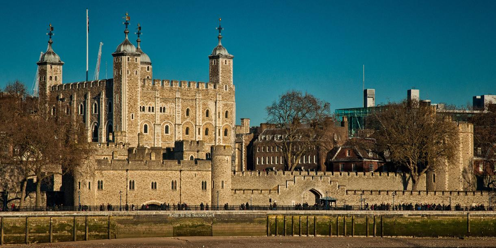
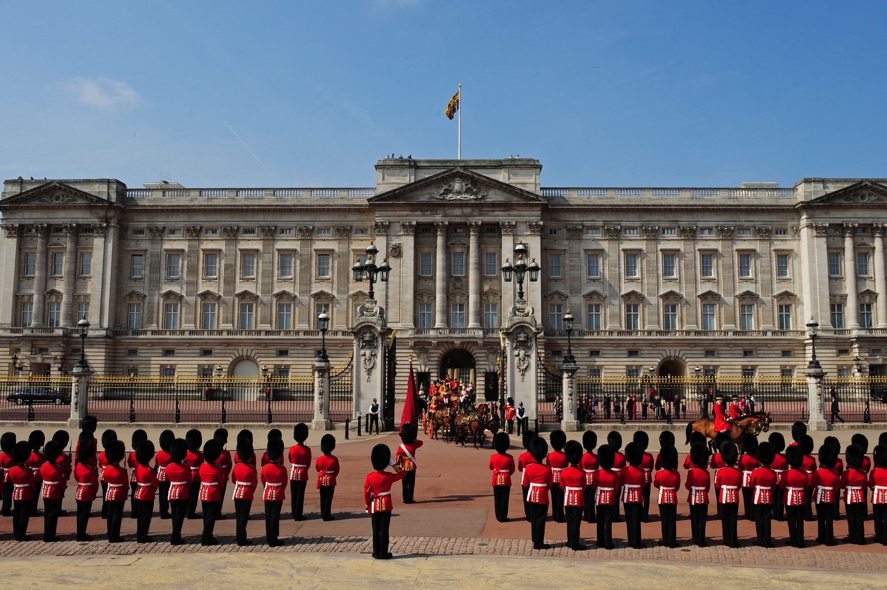
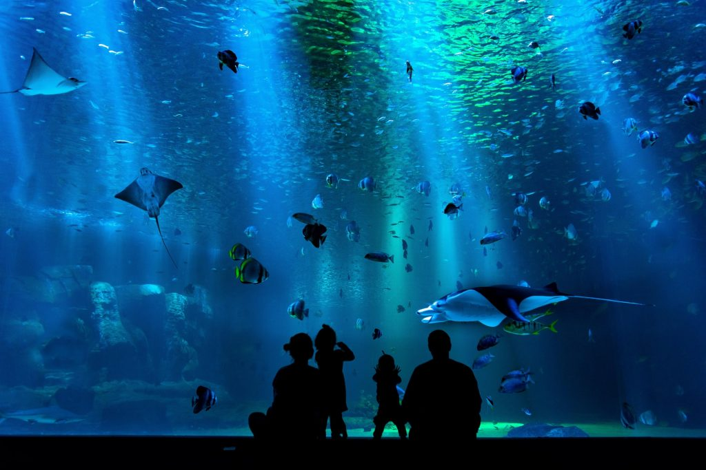

LONDRES
« Londres n’a pas son pareil. Nulle part, en aucun cas. » – Vivienne Westwood
Si Vivienne Westwood, couturière mondialement connue, l’a dit, ce doit être vrai. En tout cas,je pense comme elle. J'ai toujours trouvé la ville de Londres chic. Il se dégage d'elle une certaine élégance qui m'attire irrésiistiblement.
Quelques sites à Londres
-
Tour de Londres

-
Palais de Buckingham

-
Sea life Aquarium

La tour de Londres, en anglais Tower of Londonnb 1 est une forteresse historique située sur la rive nord de la Tamise à Londres en Angleterre à côté du Tower Bridge.Sa construction commença vers la fin de l'année 1066 dans le cadre de la conquête normande de l’Angleterre
Le palais de Buckingham (en anglais : Buckingham Palace) est la résidence officielle des souverains britanniques. Situé à Londres, le palais est à la fois le lieu où se produisent les événements en relation avec la famille royale, le lieu d'accueil de beaucoup de chefs d'État en visite, et une attraction touristique importante. C'est le point de convergence du peuple britannique lors des moments de joie, de crise et de peine
Sea Life Londres est un aquarium situé au centre de Londres, ouvert en 1997 et propriété de Merlin Entertainments.